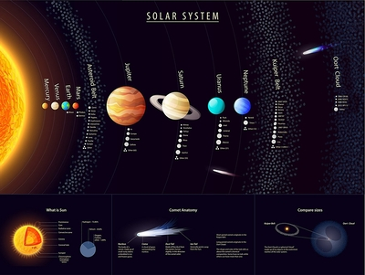

Solar System
The order of the planets in the solar system, starting nearest the sun and working outward is the following: Mercury, Venus, Earth, Mars, Jupiter, Saturn, Uranus, Neptune and then the possible Planet Nine.
The solar system is made up of the sun and everything that orbits around it, including planets, moons, asteroids, comets and meteoroids. The order of the planets in the solar system, starting nearest the sun and working outward is the following: Mercury, Venus, Earth, Mars, Jupiter, Saturn, Uranus, Neptune and then the possible Planet Nine.
The solar system extends from the sun, called Sol by the ancient Romans, and goes past the four inner planets, through the asteroid belt to the four gas giants and on to the disk-shaped Kuiper Belt and far beyond to the teardrop-shaped heliopause. Scientists estimate that the edge of the solar system is about 9 billion miles (15 billion kilometers) from the sun. Beyond the heliopause lies the giant, spherical Oort Cloud, which is thought to surround the solar system.
The order of the planets in the solar system, starting nearest the sun and working outward is the following: Mercury, Venus, Earth, Mars, Jupiter, Saturn, Uranus, Neptune and then the possible Planet Nine.
The solar system is made up of the sun and everything that orbits around it, including planets, moons, asteroids, comets and meteoroids. The order of the planets in the solar system, starting nearest the sun and working outward is the following: Mercury, Venus, Earth, Mars, Jupiter, Saturn, Uranus, Neptune and then the possible Planet Nine.
The solar system extends from the sun, called Sol by the ancient Romans, and goes past the four inner planets, through the asteroid belt to the four gas giants and on to the disk-shaped Kuiper Belt and far beyond to the teardrop-shaped heliopause. Scientists estimate that the edge of the solar system is about 9 billion miles (15 billion kilometers) from the sun. Beyond the heliopause lies the giant, spherical Oort Cloud, which is thought to surround the solar
|

|